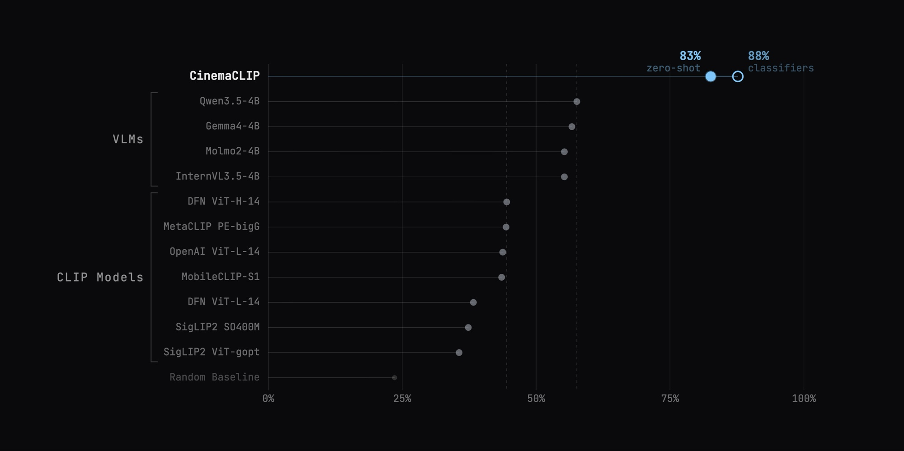
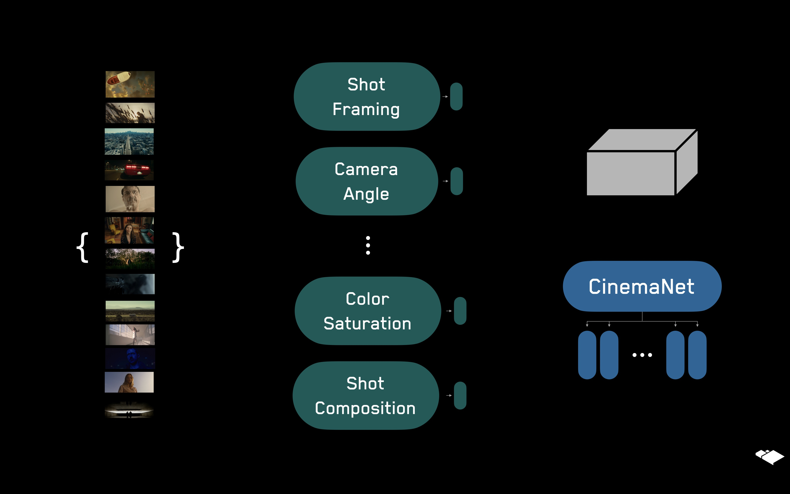
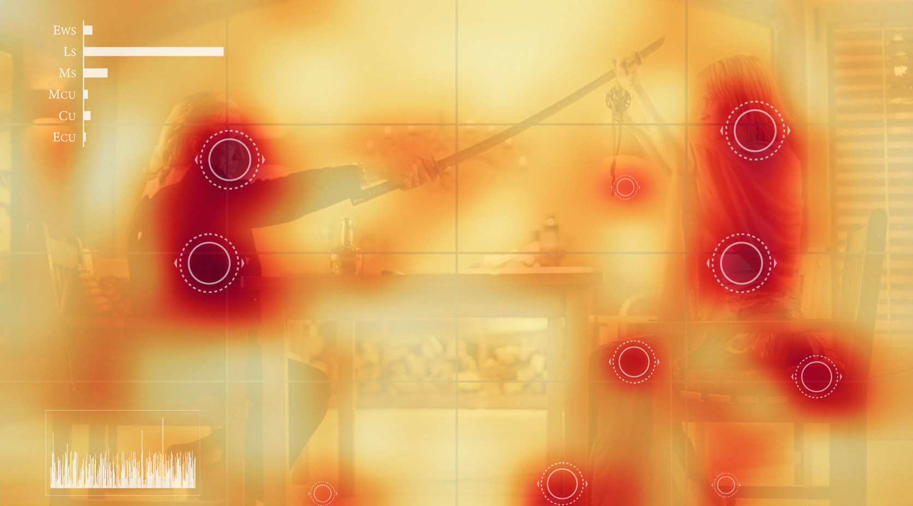

Rahul Somani
I build multimodal AI systems that help us understand visual storytelling.
Featured Work

CinemaCLIP
A hybrid fine-tuned CLIP model for the visual language of cinema. Built with filmmakers and custom datasets, this model punches well above its weight class, outperforming all other SOTA CLIP models and the most accessible VLMs.
OZU
Search and discovery engine for film and TV. We're building narrative intelligence to understand stories at scale. Our AI understands elements of craft, plot, emotional subtext, etc. enabling new ways of interacting with content.

CVEU Industry Spotlight
Presented CinemaNet, a jointly trained multi-task classification model that codifies a comprehensive taxonomy of cinematography, at the inaugral Creative Video Editing and Understanding workshop.
HBO Max "The Orbit"
Flagship interactive retail experience for HBO Max & AT&T, in collaboration with HUSH, where users could interact with parts of the HBO archive in real-time with gestures and words.
Infinite Bad Guy
Collaborative project with IYOIYO studio / Google & YouTube. I built custom vision models that helped power the visual intelligence behind the experience.

A.I. for Filmmaking - Recognising Shot Types
Blog post introducing the basics of visual language in cinema, and a custom model and dataset built to recognize different types of framing.
About
I spent hours analyzing a single three-minute scene from Pulp Fiction for a film-analysis class in college. Wondering if machines could help with that kind of analysis is what pulled me into programming and ML in 2019.
Six years later, my work still circles the same question: how do you teach ML systems to capture what experts rarely articulate? How does a cinematographer know when a shot works, an editor feel when a cut lands, and how a great piece of cinema moves you in ways you can't quite explain?
In a past life, I was competing in the juniors tennis circuit, ranked in the world's top 2000. I've also acted in a couple of short films (Crumpled, Normal) and composed the soundtrack for the former.
Experience
Built systems for long form narrative understanding, and a platform to help people discover stories. My technical work here involved conceptualizing nuanced subjective human understanding into concrete tasks we could teach ML systems. As part of this, we built custom datasets, fine-tuned hybrid multi-task CLIP/classifier models, pushed VLMs to their limits, and built the infrastructure around these to serve them to users in realtime.
Co-Founder / Head of ML @ OZU
Founding Partner @Special Circumstances
A boutique ML consultancy that built custom cinematography models, and end-to-end systems for multimodal analysis for clients like YouTube, HBO, and Michael Kors. We were invited to present our ML work at the inaugral CVEU workshop in 2021
Independent Researcher
Ever since spending 3 hours analysing a 2 minute scene from Pulp Fiction for a class in college, I'd been curious about being able to do this for all of cinema. Some choices that make great movies great are deliberate, a lot in the latent space of the brain. What's waiting on the other side of understanding cinema en masse?
Pursuing this question led me down the path of programming and machine learning.